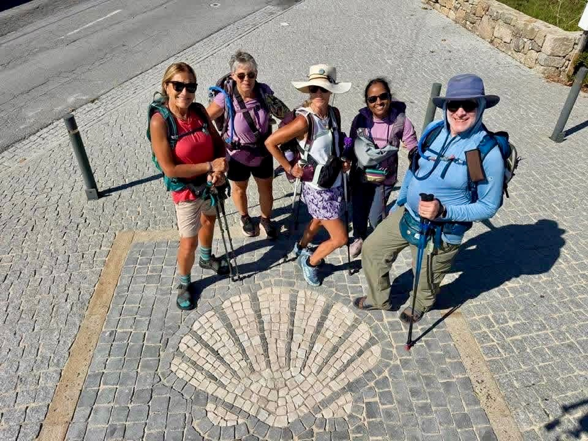

Stage 15: Teo to Santiago Compostela
Data: 6 miles.
Hotel: Hotel Compostela
Our hike started in the forest 6 miles out of Santiago from our hotel—a medieval home situated in a rural area with grape vines and fields of fruit trees. After a quick breakfast, we anxiously arranged our packs for sudden downpours. Luckily, our day was nearly 100% dry! We walked through charming winding village roads with bright flowers and the usual Camino kitties hiding everywhere. We stamped our credentials a few times as we neared Santiago.

Then—Santiago appeared before us suddenly with awe and wonder. Hundreds of pilgrims began weaving in and out of coves and streets. The sky turned a light blue and we all felt our heart flutter with excitement and relief. We followed the streets to the Cathedral of Santiago and we were all filled with so much joy! Together with hundreds of pilgrims from all over the world we had completed our journey! Our tears of joy and comfort were universal as we hugged each other and cheered. Claire and I and our whole crew were incredulous that we had completed this great pilgrimage we had planned well over a year ago. The dream was now complete.
The efficient pilgrimage office processed our credentials and we each received official certificates of comply and mileage. It was a tremendous thrill to receive them. We clutched our certificates like they were official graduate degrees—our class of 2026 is proud and forever changed.